Local-only
Your scores never leave your machine. No cloud account required.
Index your play history, search every score, track mastery, and build smart collections — all offline on your machine.
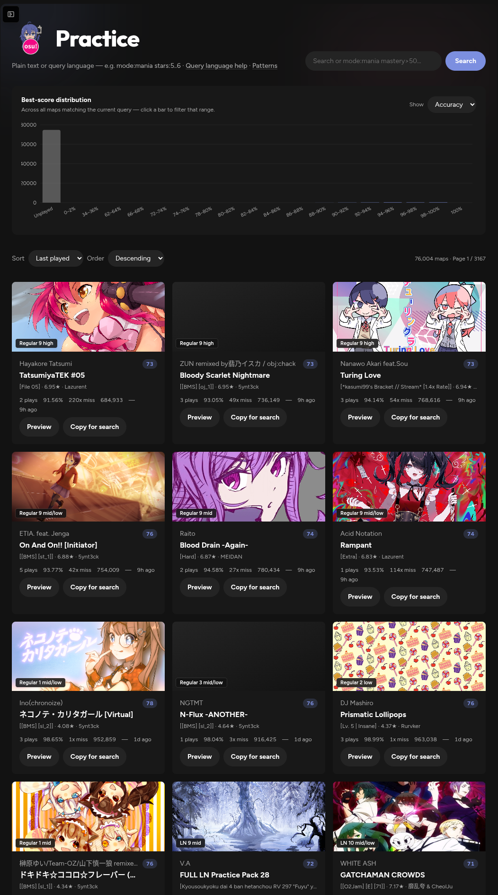
Why Roxysu
Built around read-only lazer access, one query language, and analytics that help you decide what to play next.
Your scores never leave your machine. No cloud account required.
Realm sync is read-only. Optional collection sync backs up
client.realm first.
One DSL powers practice search, collections, and global find.
Mastery, sessions, retries, and skill trends — not just a score dump.
Features
From library search to live session recommendations — the same UI whether you run via Bun or the desktop app.
Browse every map you’ve touched as practice cards — play count, best accuracy, misses, PP, mastery, and last played.
Per-beatmap deep dives with cover art, mastery, Sunny dan estimates, pattern analysis, and recent sessions on that map.
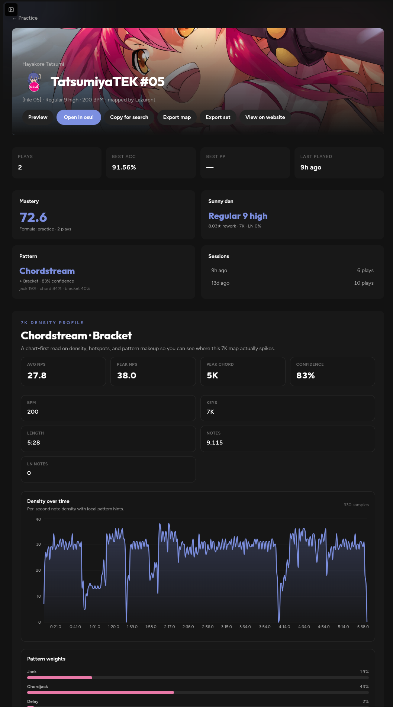
Scores auto-group into sessions by inactivity. Open the live current session hub — updated as new plays land — and pull suggestions from query filters or 7K recommendations.
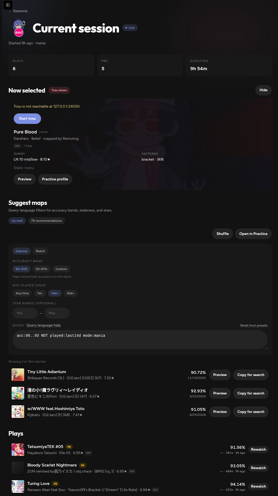
Collections store query strings, not static lists — they stay current
as your library grows. Sync them into lazer as
!Roxysu-prefixed collections when you’re ready.
client.realm backup before write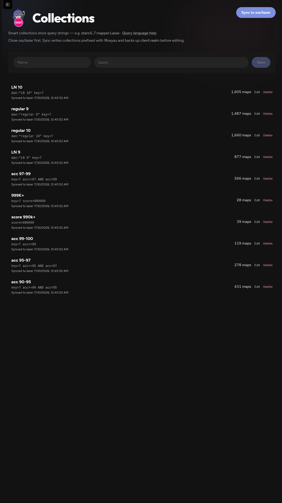
See Push, Accuracy, and Consistency estimates, skill evolution over time, weekly activity, and how you actually play sessions.
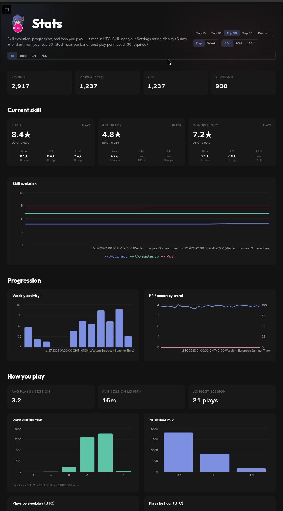
Rewatch scores with timing histograms, miss patterns, and column-level feedback — useful when a PB almost lands.
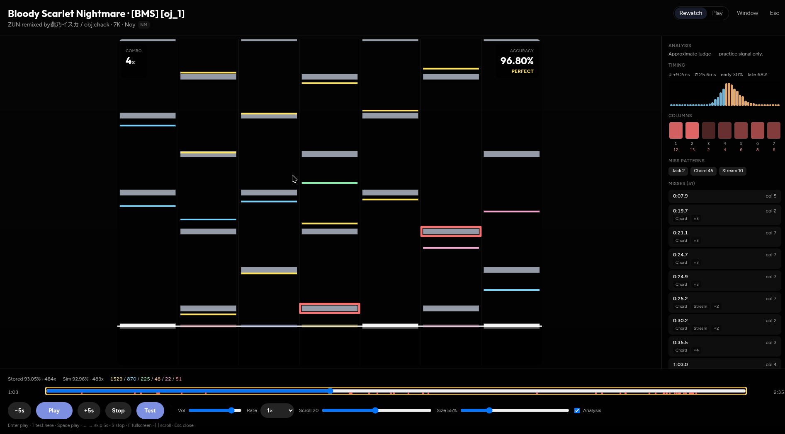
Search online with the same query language as Practice, hide sets
you already own, then download missing .osz files —
one at a time or in bulk — and open them in osu!lazer.
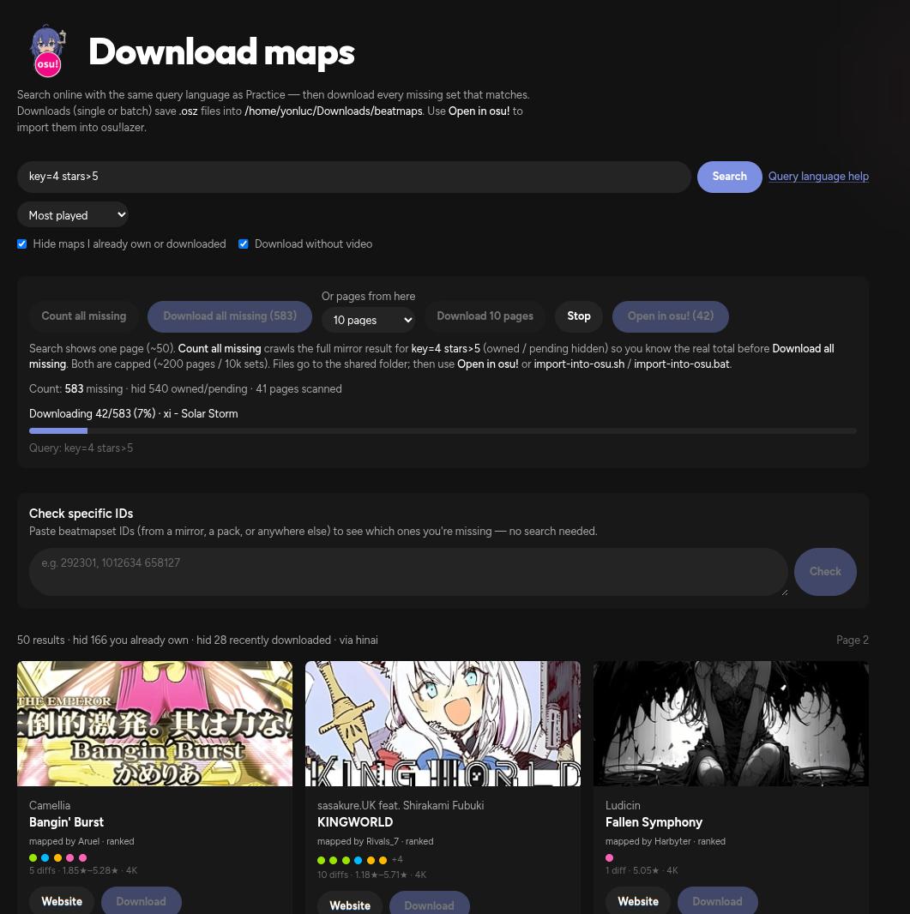
Query language
Plain text hits titles and artists. Field filters, ranges, and boolean operators power everything else.
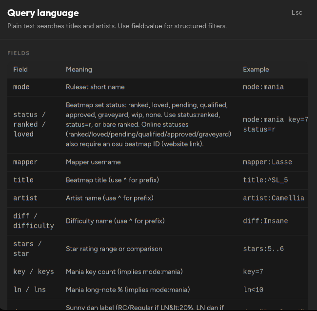
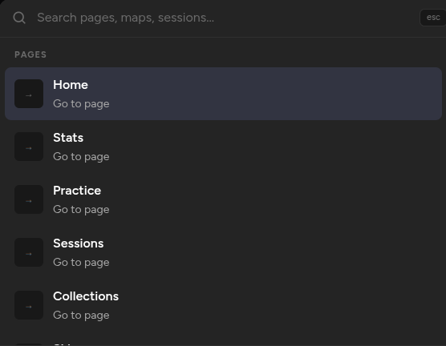
More of the UI
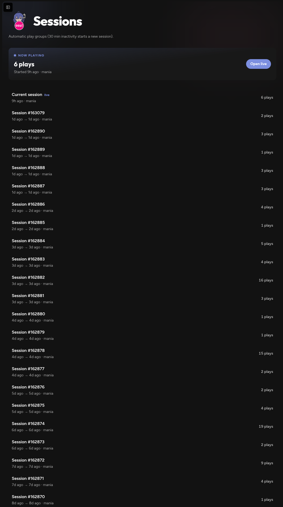
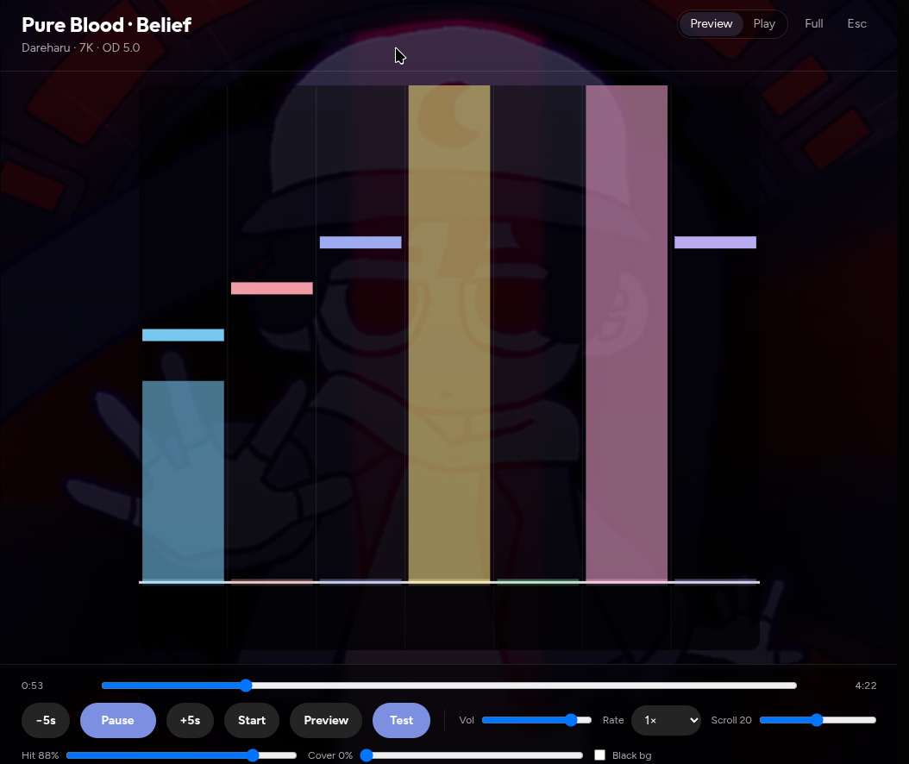
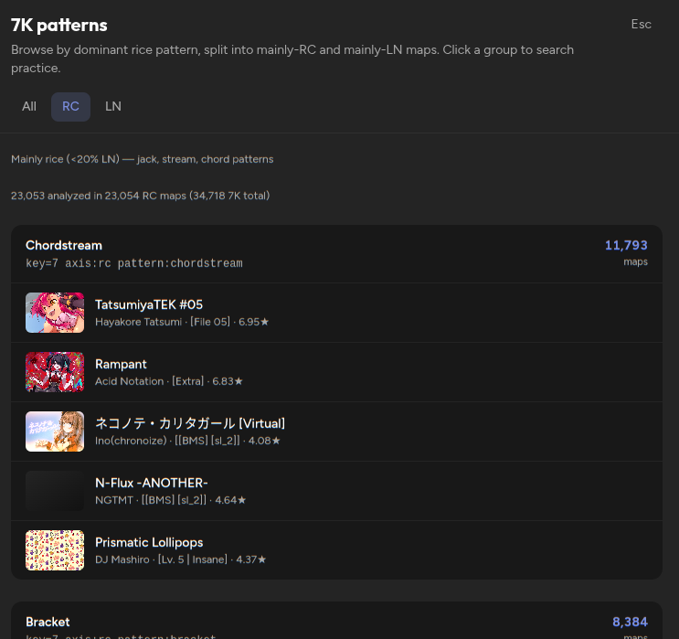
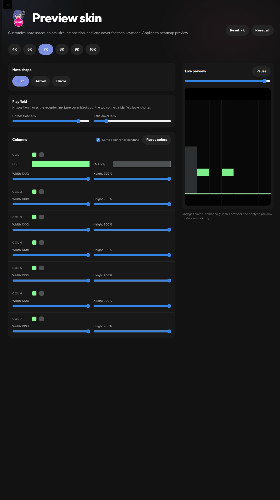
Get started
Install the Windows app, run the Bun dev server from source, or use the Nix flake on Linux/NixOS. You’ll need an osu!lazer install with local play history either way.
Windows
Grab the packaged Electron app — no Bun or Node required. Launch it after install and wait for the first realm sync.
From source
Needs Bun and Node.js LTS. Starts the server on port
4321 plus the continuous realm sync loop.
bun run dev.http://localhost:4321/ and wait for the first sync.$ git clone https://github.com/Yon-Luc/Roxysu.git
$ cd Roxysu
$ bun install
$ bun run dev
# → http://localhost:4321/Env vars and Windows native-build notes are in the README.
Nix / NixOS
Needs Nix with flakes enabled (nix-command +
flakes). Targets x86_64-linux.
One-shot from GitHub
No clone required — Nix fetches the repo flake and runs the packaged desktop app:
$ nix run github:Yon-Luc/Roxysu
# pin a commit or tag:
$ nix run github:Yon-Luc/Roxysu/v0.0.1Add to a NixOS / home-manager flake
Wire Roxysu as an input, then put the package on your system or user profile:
# flake.nix
{
inputs.roxysu.url = "github:Yon-Luc/Roxysu";
outputs = { nixpkgs, roxysu, ... }: {
# NixOS:
nixosConfigurations.myhost = nixpkgs.lib.nixosSystem {
system = "x86_64-linux";
modules = [{
environment.systemPackages = [
roxysu.packages.x86_64-linux.roxysu
];
}];
};
};
}
Home Manager: add
roxysu.packages.${pkgs.system}.roxysu to
home.packages the same way. For hacking, clone and use
nix develop (Bun + Node toolchain) instead of the
packaged app.